The images below use the pinned Demo App and Demo Platform installation. Operator scenario panels are clearly labeled illustrations over the live demo board. They contain invented demo records and no credentials or production data.
Give the operator its own access
The Owner can issue a scoped, expiring operator token and revoke it. Operator sessions have their own identity and audit trail. The operator role cannot manage secrets or installation access.
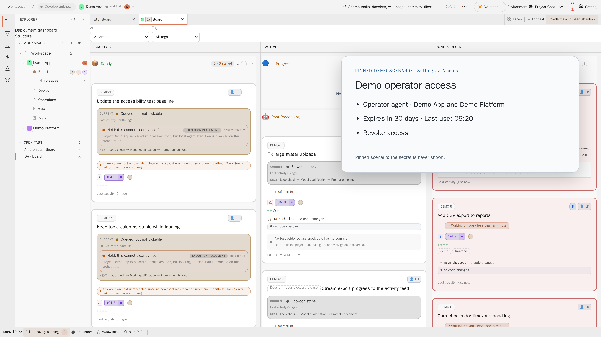
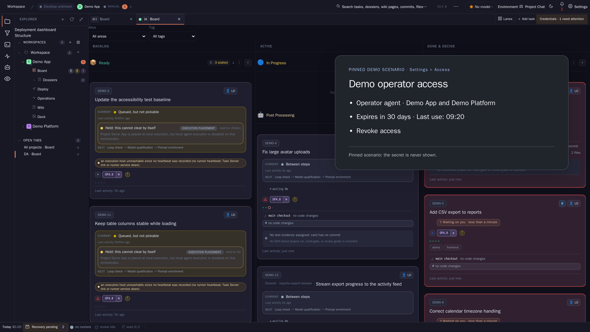
Wake when a decision needs attention
studio-op watch holds one watcher lease and waits on a resumable decision stream. When a card needs attention, the event carries its reason and evidence links.
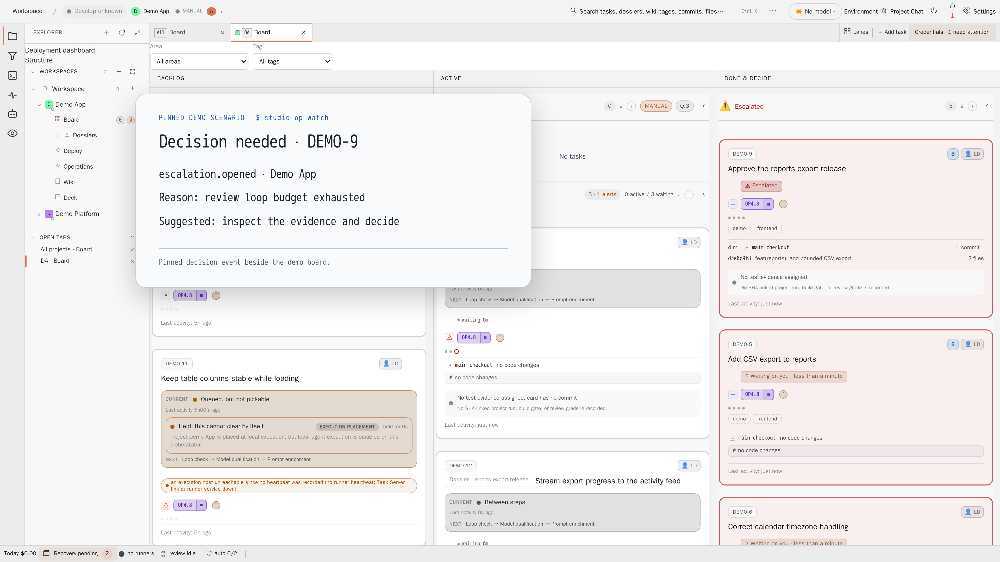
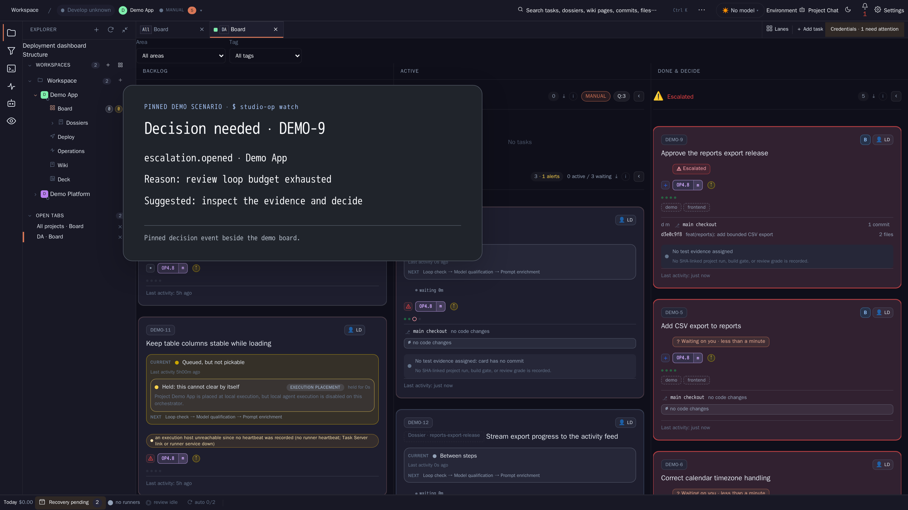
Read the batch situation in one command
studio-op triage collects open batch gates, red members and pending pushes across projects within the operator's scope. It reports the next safe member action.
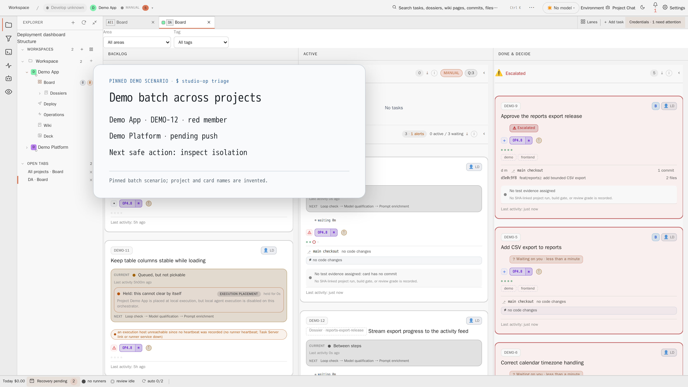
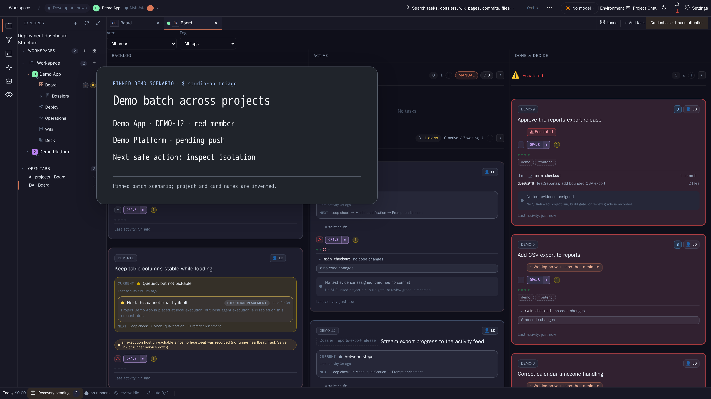
See what the operator did and why
Operator actions carry an actor and reason on the card. Continue rounds use the recorded result ref by default. The in-app chat can read the append-only operator log, with its source named in the context receipt.
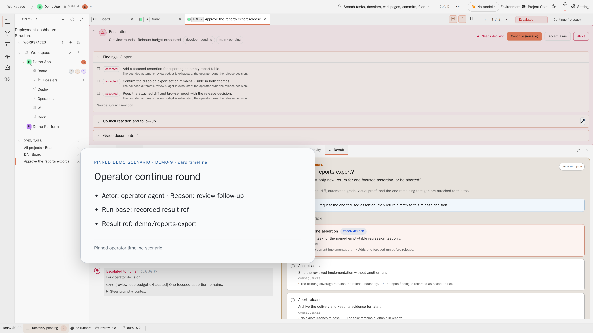
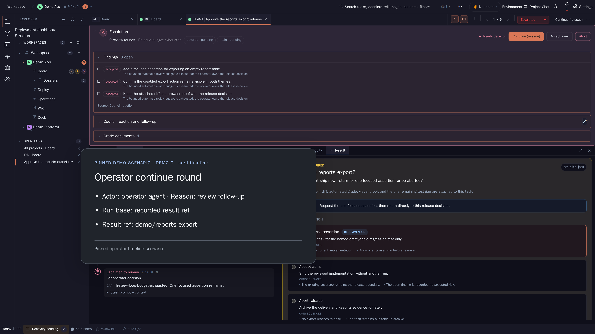
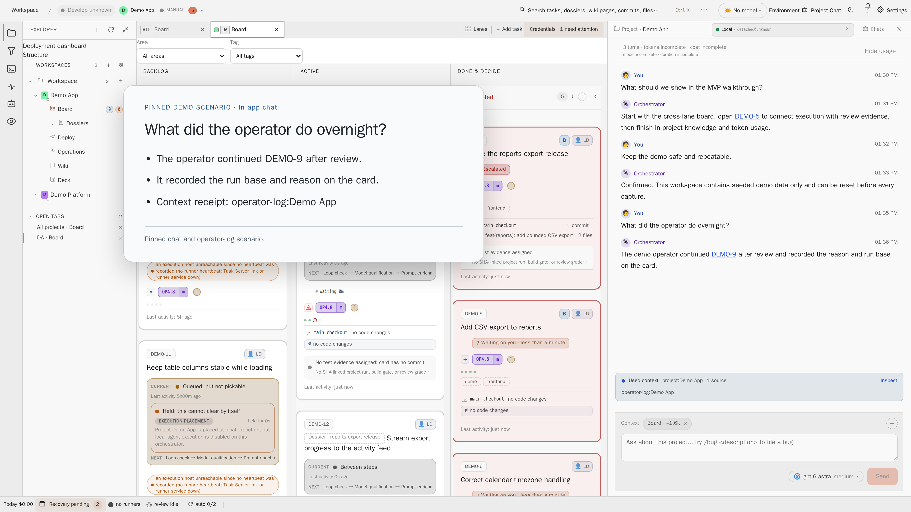
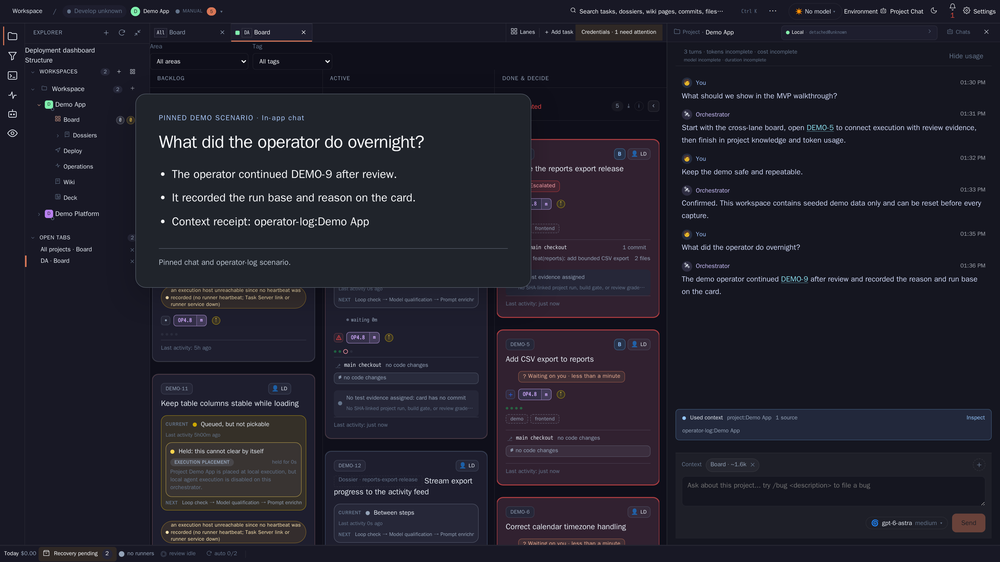
Check pending work before deployment
Restart and deploy preflights name pending pushes and other blockers. A deploy plan orders Task Server and readiness before Engine and hosts in a bounded window.
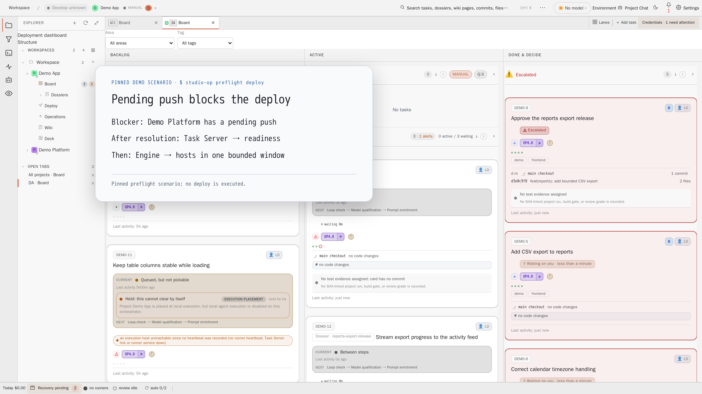
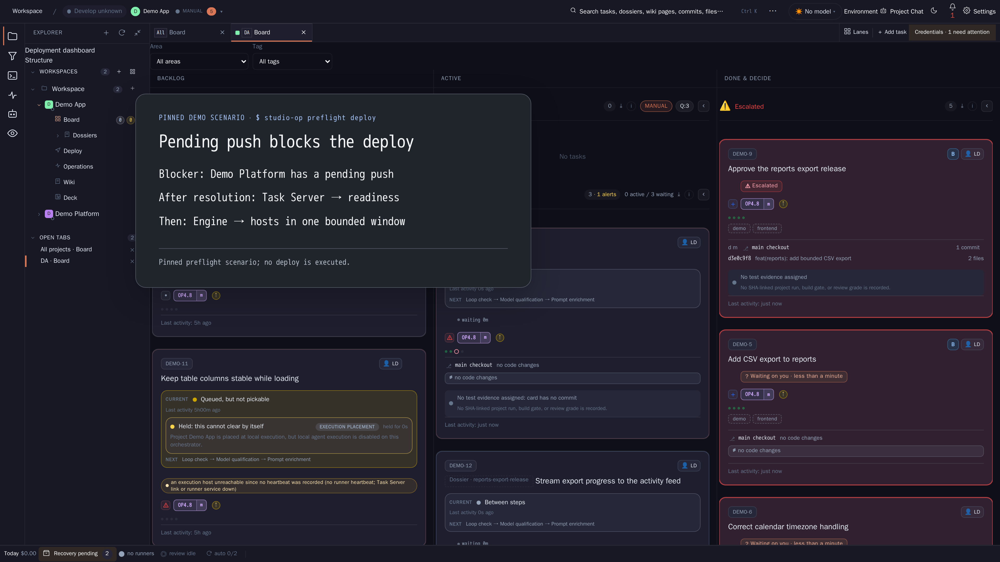
Keep the final authority with the Owner
The Owner keeps credentials, consent, installation settings and the second factor. Risky actions require Owner approval with step-up. An attention lease and card revision checks coordinate operator writes, and an Owner action can end the lease.
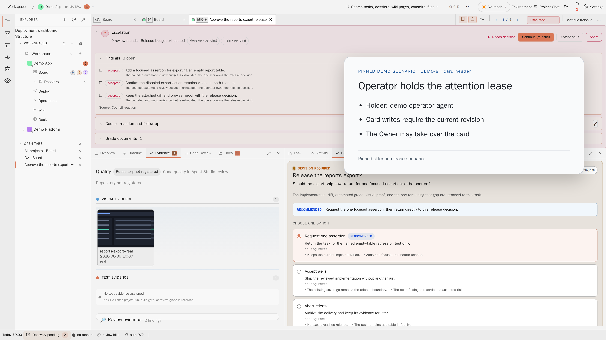
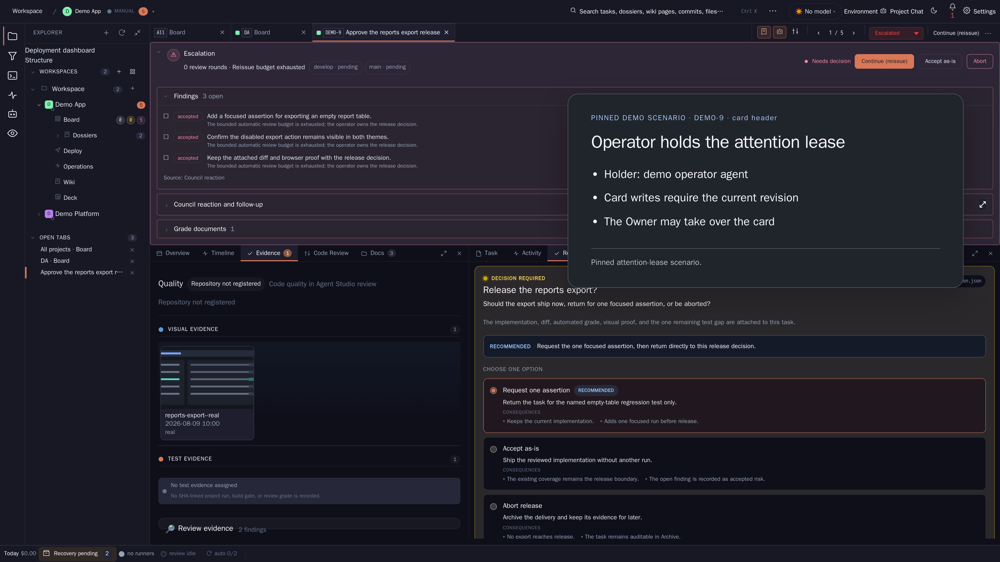